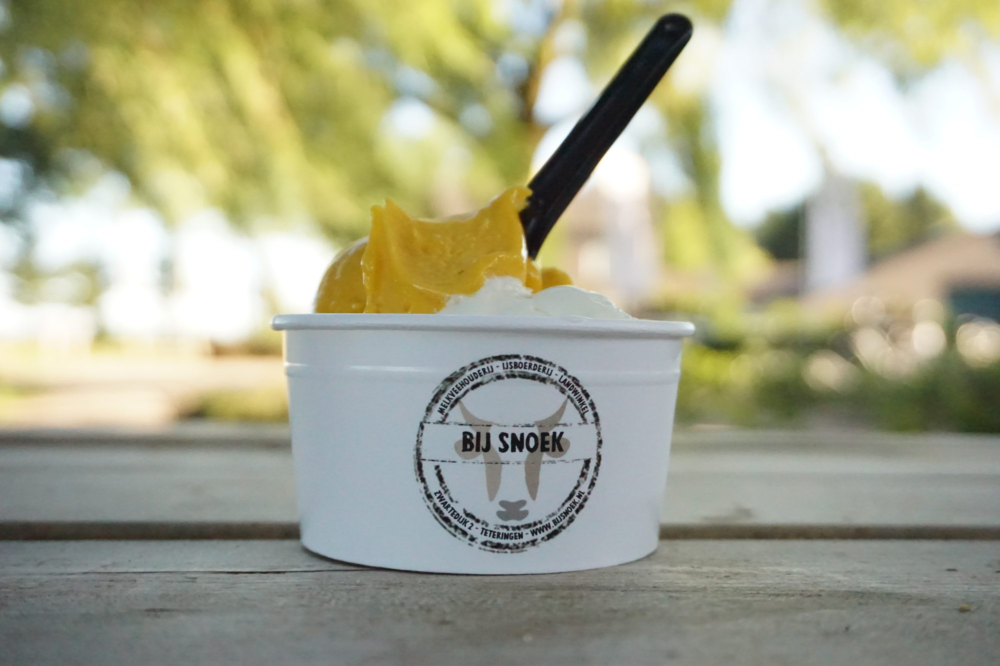
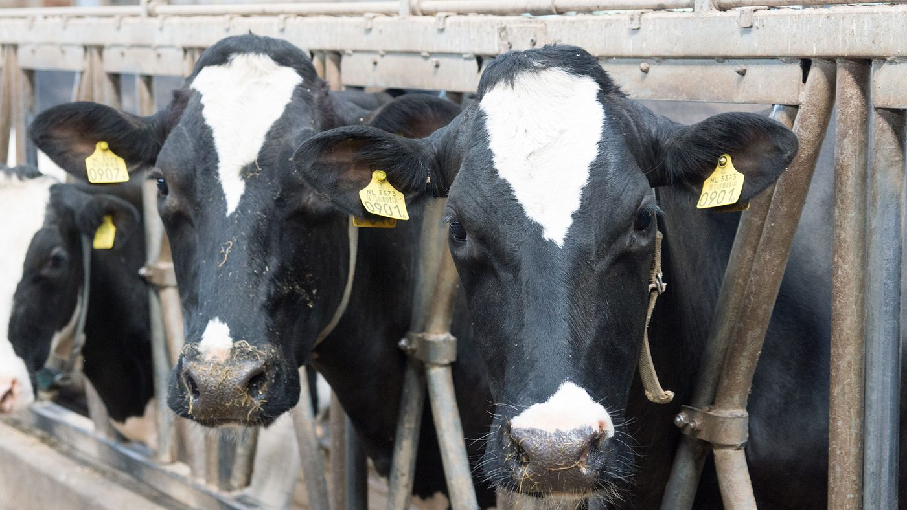
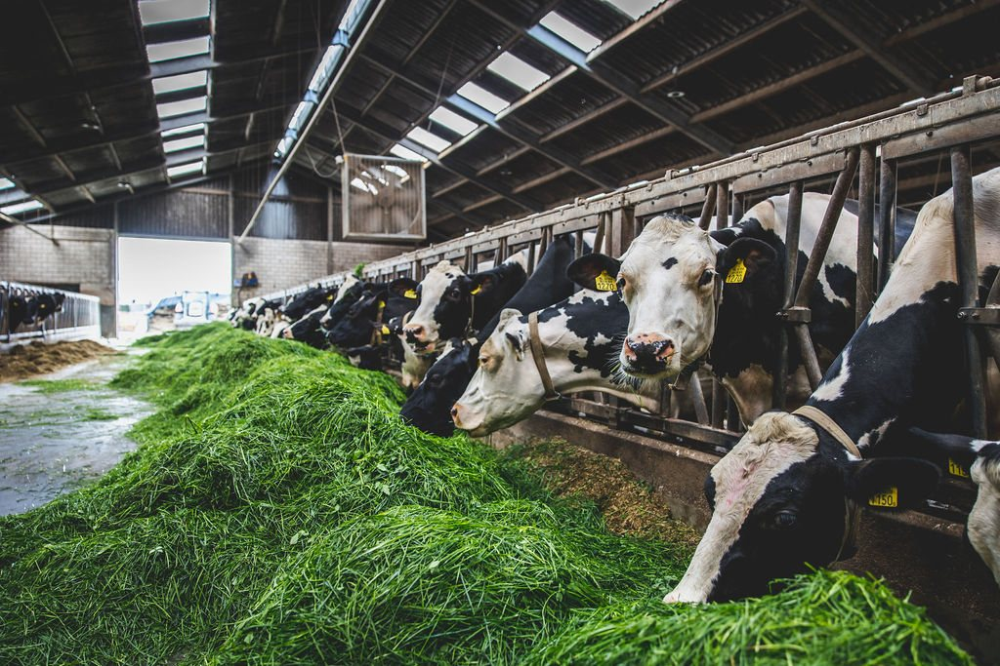

IJs van de melk van onze eigen koeien
IJsboerderij en landwinkel aan de Zwartedijk in Teteringen. Eet een ijsje of drink een kop koffie op ons terras, met uitzicht over het weiland.
Vers ijs, gewoon op de boerderij
We maken ons ijs van dagverse melk van onze eigen koeien. Er is roomijs en sorbetijs, met een ruime keuze aan smaken.
Eet uw ijsje op het terras met uitzicht over het weiland, aan een picknicktafel terwijl de kinderen spelen. Of neem het mee naar huis.
- Roomijs en sorbet
- IJs voor thuis
- Koffie en thee
- Terras aan het weiland
- Speelplek voor kinderen
- IJstaarten op bestelling

Een winkel vol boerendelicatessen
Ons assortiment hebben we met zorg samengesteld, met veel (lokale) streekproducten. Zuivel van onze eigen melk, en nog veel meer.
Zuivel en kaas
Zuivel gemaakt van de melk van onze koeien, en diverse kazen.
Vlees van Havermans
Vlees en worsten van slagerij Havermans. Ook online te bestellen.
Uit de voorraadkast
Pure vruchtsappen, vrije-uitloopeieren, beschuiten, jam, stroop, honing, bakmixen en thee.
Voor bij de borrel
Bikkels, worsten en van alles om een mooie borrelplank mee te maken.
Een landelijk cadeau nodig? Er staan cadeautjes klaar, maar u kunt er ook zelf een samenstellen. We denken graag met u mee en pakken het voor u in.
Online bestellen, bij ons ophalen
Vlees van Havermans, BBQ- en gourmetpakketten en ijstaarten bestelt u in onze webshop. U haalt het op in de landwinkel.
IJstaarten
Mascarpone-framboos, of een ijstaartje voor één
vanaf € 4,50Pakketten en schalen
Barbecue, gourmet, fondue en salades
vanaf € 8,90BBQ
Gemarineerd vlees, worst en hamburgers
15 productenRundvlees
Van slagerij Havermans
35 productenVarkensvlees
Van slagerij Havermans
39 productenVleeswaren
Voor op brood of de borrelplank
13 productenWanneer bestellen, wanneer ophalen?
Vlees wordt vers voor u klaargemaakt door slagerij Havermans.
Kerstpakketten voor uw medewerkers
Een pakket vol boerendelicatessen, van ontbijt- tot borrelproducten. Wij stellen het voor u samen, of u kiest zelf.
- Naar uw wensen en budget
- Voor kleine teams en grote organisaties
- Met een persoonlijk gebaar als u wilt

Familie Snoek
"Weet wat je eet!"
Al meer dan 50 jaar heeft onze familie een melkveebedrijf aan de Zwartedijk in Teteringen. In 2017 kwamen daar de ijsboerderij en de landwinkel bij. Rob runt het melkveebedrijf, Irene zorgt samen met een geweldig team voor de winkel en het ijs. En Maud, Noor, Seb en Siem springen graag bij.
We werken op een verantwoorde en duurzame manier, met veel aandacht voor dierenwelzijn. Zo weet u precies waar uw ijs en zuivel vandaan komen.
Met de klas naar de boerderij
Via Klasseboeren ontvangen we schoolklassen. Kinderen lopen mee door de stallen, gaan zelf aan de slag met opdrachten en sluiten af met een ijsje van onze eigen melk.
Kom langs op de boerderij
Op de fiets of wandelend vanuit Breda bent u er zo. Voor de navigatie gebruikt u het adres Groenstraat 10.
Bij Snoek
Melkveehouderij, ijsboerderij en landwinkel
Openingstijden
IJsboerderij en landwinkel
De stallen zijn vanwege tractoren en vrachtwagens niet altijd open voor bezoek. Dat is voor uw eigen veiligheid.